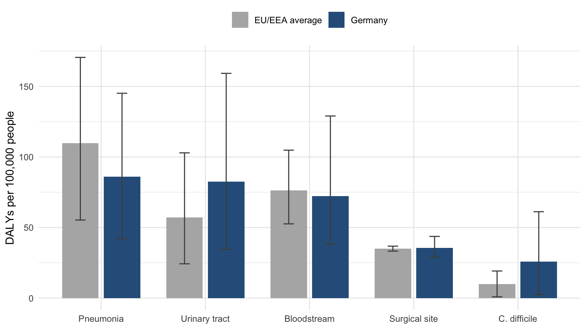

Key takeaway: Germany has fewer infections per hospital patient than the European average, yet its population-wide burden of hospital-acquired infections is higher. The main driver appears to be how many people are admitted to hospital, not how well hospitals control infection.
Infections caught during hospital care add to illness, death and cost, and many of them can be prevented. Healthcare-associated infections (HAIs) place a heavy load on health systems, and prevention budgets are limited. Planners therefore need to know which infections cause the most harm, and how that harm compares with other diseases.
Counting cases alone does not answer that question. A common infection that rarely kills may do less harm than a rarer one that often does. Disability-adjusted life years (DALYs) address this by combining time lost to early death with time lived with disability. One DALY is one year of healthy life lost.
This post looks at a 2019 study that estimated the burden of five HAI types in Germany using DALYs (Zacher et al. 2019). Germany records fewer infections per hospital patient than the European average, so you might expect a lower burden. The study found that the picture is more complicated.
Where the evidence comes from
The figures come from a point prevalence survey of healthcare-associated infections and antimicrobial use. The European Centre for Disease Prevention and Control ran it in acute-care hospitals during 2011 and 2012 (Zacher et al. 2019). Participating hospitals recorded which patients had an infection on a single day, so the survey is a snapshot rather than a count of every case over the year.
Three sets of hospital data were used. The core German sample contains 46 hospitals and 9,626 patients, selected at random with hospital size taken into account so that it reflects German hospitals as a whole. A second, larger German sample of 132 hospitals was not selected to be representative, and the authors use it mainly to show how much the results depend on which hospitals were included. For comparison, the European data cover 273,753 patients from 1,149 hospitals in 29 EU/EEA countries and Croatia.
To turn these snapshots into yearly estimates, the researchers ran a simulation 1,000 times. Each reported figure is a median, and its 95% uncertainty interval runs from the 2.5th to the 97.5th percentile of the simulated results. The method was released as an open-source R package, so other analysts can check the calculations and reuse them. The study covers five infection types: pneumonia, urinary tract infection, bloodstream infection, surgical site infection and C. difficile infection.
What the analysis found
Table 1 summarises the national estimates. Germany’s median burden is 308.2 DALYs per 100,000 people, compared with 290.0 for the EU/EEA average.
| Measure | Germany | EU/EEA average |
|---|---|---|
| New infections | 592.1 (521.7–665.8) | 467.9 (456.2–480.2) |
| Attributable deaths | 20.1 (13.4–28.2) | 15.3 (10.2–21.2) |
| DALYs | 308.2 (221.2–416.3) | 290.0 (214.9–376.9) |
The DALY intervals overlap widely, so the study does not show a clear difference in total burden on this measure alone. The gap in new infections is clearer, because Germany’s interval does not overlap the EU/EEA interval at all. Germany’s hospitals have a lower infection rate among patients, yet the population-wide rate of new infections is higher. The gap is largely explained by how many people are treated in hospital.
Cases and burden are not the same thing. Pneumonia and bloodstream infections make up 28% of cases but 51% of DALYs, because they are more often fatal. Urinary tract infections show the reverse pattern, with 45% of cases but only 27% of DALYs. This is why case counts alone cannot show which infections cause the most harm.
What this means for planners: Reducing avoidable hospital admissions and improving infection control inside hospitals are both worth funding. The study cannot tell you which of the two would save more, so a decision should weigh both and test the choice locally.
Figure 1 breaks the burden down by infection type. The useful comparisons are urinary tract infection and C. difficile, where Germany’s median is higher (82.6 compared with 57.1, and 25.9 compared with 10.0), and pneumonia, where it is lower (86.1 compared with 109.8). Bloodstream and surgical site infections are close to the European figures. The error bars are wide for almost every type, especially for C. difficile, so the ranking between countries should be read with caution.
The authors do not attribute Germany’s higher figure to poor hygiene. Hospital-level infection rates in Germany are lower than the European average, and the authors suggest that good hygiene may partly explain this. The higher population figure instead comes from admissions. Germany admits a large share of its population to hospital, so a lower risk per patient, applied across many more patients, produces a higher burden for the whole population. The authors suggest that Germany’s large number of hospital beds is a probable contributing factor, while noting that this needs further study.
This answers the question raised at the start: a low infection rate per hospital patient does not mean a low burden for the population. Germany’s median burden was 308.2 DALYs per 100,000 people, compared with 290.0 for the EU/EEA, although the uncertainty intervals overlap widely. The main driver appears to be how many people are admitted to hospital, not how well hospitals control infection.
For someone planning prevention spending, this changes the question. A country can have good hospital hygiene and still carry a high infection burden if admission rates are high. Prevention could therefore focus on two areas: infection control inside hospitals, for example on urinary tract infections, which make up a large share of cases, and reducing avoidable hospital stays. The study supports both, but it does not show that one matters more than the other.
Three limits matter for decisions. First, the figures come from a single-day snapshot in each hospital, and the larger sample gave higher estimates, so treat the national figure as a rough guide and plan for a range rather than a single number. Second, the severity categories used to estimate remaining life expectancy come from European patients. German patients may be less severely ill than the European average, so the DALY figures for Germany are more likely to be underestimated than overestimated. Third, each infection is counted separately, so a patient with two infections is counted twice, which slightly overstates the burden. The full analysis is in Zacher et al. (Zacher et al. 2019).
References
Zacher, Benedikt, Sebastian Haller, Niklas Willrich, et al. 2019. “Application of a New Methodology and R Package Reveals a High Burden of Healthcare-Associated Infections (HAI) in Germany Compared to the Average in the European Union/European Economic Area, 2011 to 2012.” Eurosurveillance 24 (46). https://doi.org/10.2807/1560-7917.ES.2019.24.46.1900135.